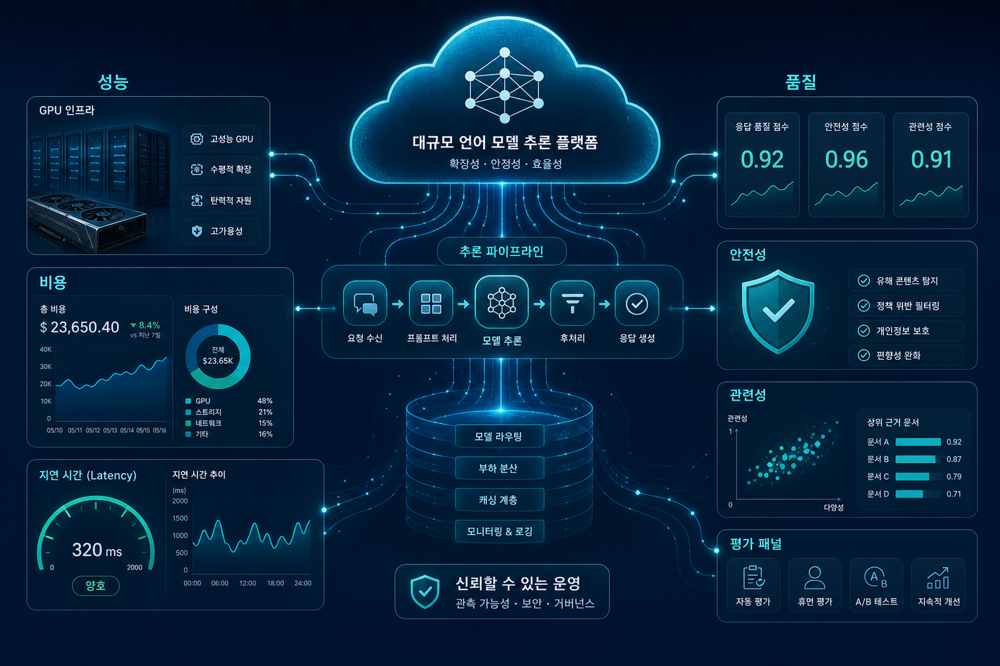
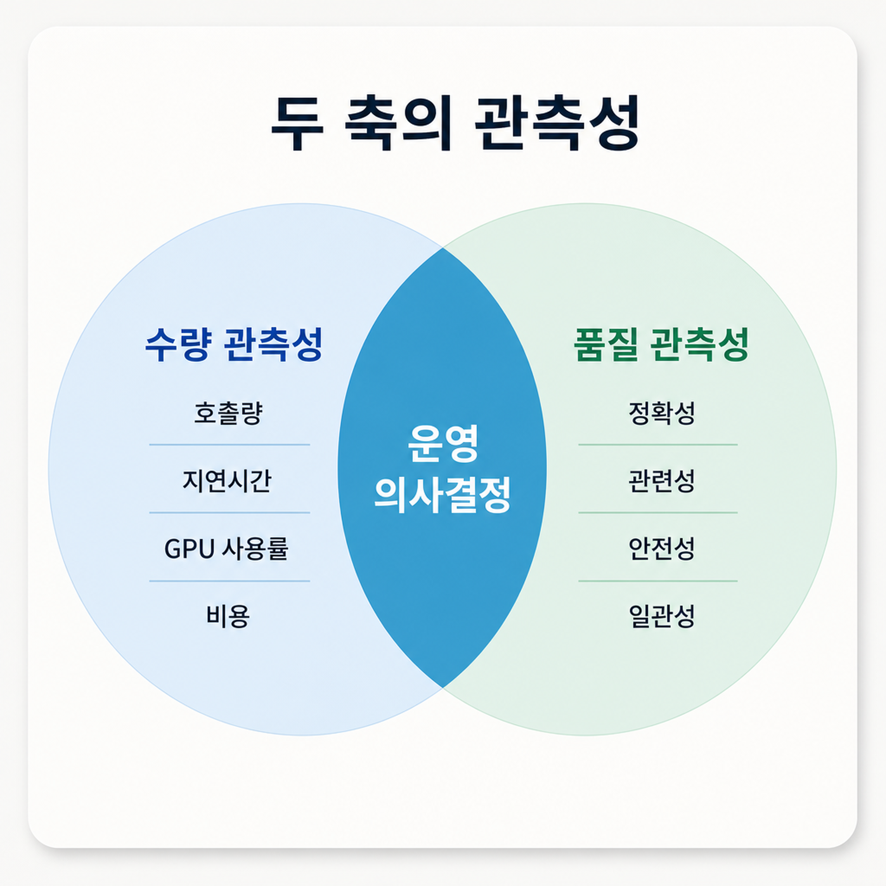
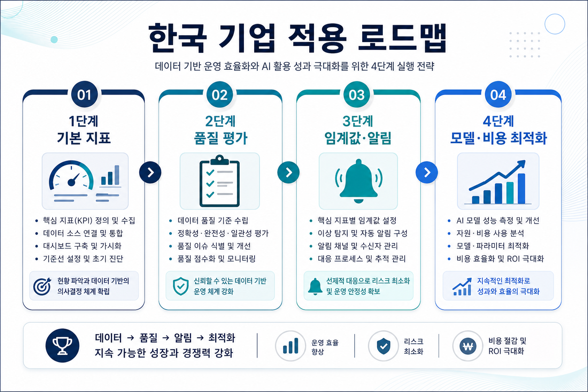

모델별 자원 귀속
단일 엔드포인트에서 여러 모델을 운영할 때 모델별 호출량, 지연시간, 그래픽처리장치 사용률, 시간당 비용을 분리해야 실제 병목과 비용 원인을 찾을 수 있다.
오늘 신규 수집된 아마존웹서비스 머신러닝 블로그 글은 생성형 인공지능 운영의 초점이 단순 인프라 모니터링에서 “서비스 품질까지 포함한 운영 의사결정 체계”로 이동하고 있음을 보여준다.

과거의 모델 운영은 엔드포인트가 살아 있는지, 지연시간이 기준을 넘지 않는지, 그래픽처리장치가 과부하인지에 집중했다. 그러나 대규모 언어 모델은 응답이 비결정적이기 때문에 “정상 응답”이라는 기술 지표만으로는 고객 경험과 규제 리스크를 설명할 수 없다.
아마존 세이지메이커 인공지능 추론 구성요소, 아마존 클라우드워치, 아마존 관리형 그라파나 조합은 모델별 인프라 지표와 품질 지표를 분리 수집하면서도 한 화면에서 비교할 수 있는 참조 구조를 제시한다.

단일 엔드포인트에서 여러 모델을 운영할 때 모델별 호출량, 지연시간, 그래픽처리장치 사용률, 시간당 비용을 분리해야 실제 병목과 비용 원인을 찾을 수 있다.
입력 분포 변화나 프롬프트 유형 변화는 오류율 없이도 응답 품질을 낮출 수 있다. 관련성, 안전성, 일관성 점수는 전통적 장애 지표가 놓치는 위험을 보완한다.
평가용 대규모 언어 모델을 사용할 때는 모델 버전 고정, 데이터 지역 요건, 민감정보 처리, 비용 한도, 사람 검토 기준을 함께 설계해야 한다.
| 운영 질문 | 필요 지표 | 의사결정 예시 |
|---|---|---|
| 어떤 모델이 비용을 만들고 있는가 | 모델별 호출량, 그래픽처리장치 사용률, 시간당 비용 | 모델 라우팅 조정, 인스턴스 크기 변경, 자동 확장 정책 수정 |
| 품질 저하가 특정 프롬프트나 업무에서 발생하는가 | 관련성, 정확성, 안전성, 평가 지연시간 | 프롬프트 템플릿 개선, 검색 데이터 보강, 사람 검토 비율 조정 |
| 운영 안정성과 고객 경험이 균형을 이루는가 | 지연시간, 오류율, 품질 점수, 사용자 피드백 | 성능 목표와 품질 목표를 함께 둔 배포 승인 기준 수립 |
한국 기업의 생성형 인공지능 과제는 개념검증 이후 전사 확산 단계에서 비용, 보안, 품질 책임 소재를 요구받는다. 이번 글의 메시지는 모델 성능을 잘 내는 것보다 운영 증거를 남기는 것이 더 중요해지는 전환점과 맞닿아 있다.
그래픽처리장치 사용률과 모델별 비용을 업무 가치와 연결해야 예산 방어가 가능하다.
안전성 점수와 위반 탐지 기록은 내부통제와 규제 대응의 근거 자료가 된다.
정확성·관련성 지표는 현업이 체감하는 품질과 운영 조직의 기술 지표를 연결한다.

호출량, 지연시간, 오류율, 그래픽처리장치 사용률, 비용을 모델 단위로 분리한다.
정확성, 관련성, 안전성, 어조, 도메인 적합성을 업무별 기준으로 정의한다.
인프라 지표와 품질 지표를 함께 보는 알림 기준을 만들고 운영자·현업 검토자를 지정한다.
품질이 유지되는 범위에서 모델 크기, 라우팅, 캐싱, 자동 확장 정책을 조정한다.
평가 모델이 특정 응답 양식을 선호할 수 있으므로 사람 검토 샘플과 비교해야 한다.
품질 평가 과정에 사용자 질의와 응답이 들어가므로 마스킹, 보존 기간, 접근권한을 정해야 한다.
단일 종합 점수만 보면 품질 저하 원인을 놓칠 수 있다. 세부 점수와 실제 사례를 함께 보관해야 한다.